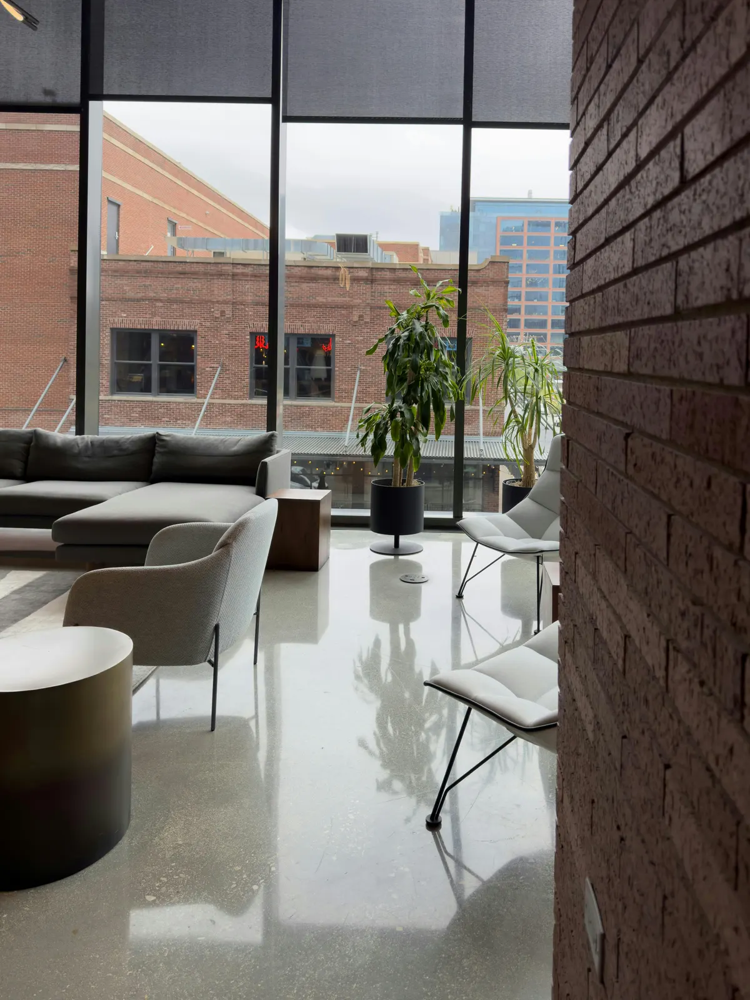
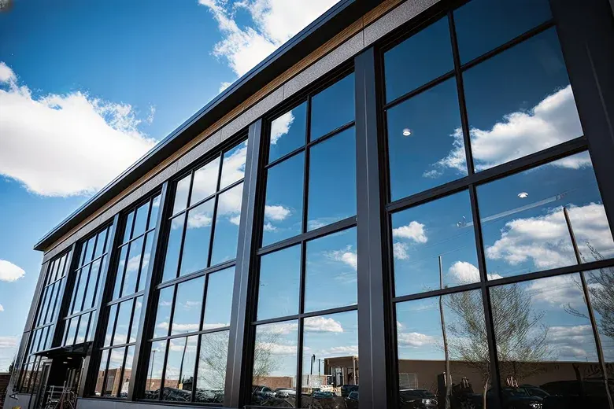
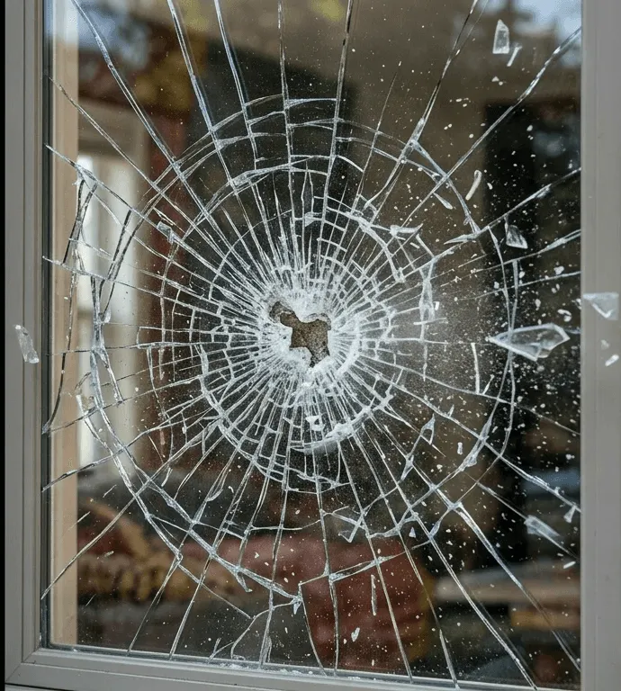

UV protection
Films block the UV rays that fade merchandise, furniture, flooring and fixtures, and protect the people working by the windows.

Lower cooling costs, more comfortable staff and customers, and a cleaner, more professional look.
Reflective, clear ceramic, security and anti-graffiti films from 1TakeTints, matched to your building’s glass after an in-person consultation.
Window tint helps businesses reduce cooling costs, improve comfort for employees and customers, and create a more polished, professional appearance, with a film for every need.
Films block the UV rays that fade merchandise, furniture, flooring and fixtures, and protect the people working by the windows.
Reject solar heat and glare so the space stays comfortable and your cooling system doesn’t have to work as hard.
Reflective and decorative films keep offices, meeting rooms and back-of-house areas private while still letting in daylight.
Security film helps hold glass together on impact, and anti-graffiti film takes the scratches and tags instead of your windows.
Performance depends on the film and your glass. 1TakeTints recommends a film after checking your windows in person.

Trained by the best installers in the industry, 1TakeTints is set on raising the bar: the highest quality materials, precise and clean workmanship, and clear education on what a proper installation looks like, from start to finish.
A consultation isn’t just for measurements. Most importantly, we meter your glass to find the right solution. The wrong film on the wrong glass can lead to cracking or shattering.
Call or send the form with your business and city. We’ll set a time to visit.
Every window is measured at your location so the quote matches your building.
A proper glass reading shows which films are safe for your windows, before anything is installed.
Reflective, clear ceramic, security or anti-graffiti, chosen for heat, privacy, glare or protection.
High-quality materials and careful workmanship, with your day-to-day business in mind.
We walk you through what a proper installation looks like and how to care for your film.
From street-level storefronts to full glass façades, the right film changes how a building looks and feels inside.


Every building is different, so every quote starts on site.
1TakeTints installs reflective films, clear ceramics, security films and anti-graffiti films. The right one depends on whether you need heat rejection, privacy, glare control or protection, and on the type of glass you have.
To take measurements and, most importantly, to meter your glass. Installing the wrong film for your type of glass can lead to the glass cracking or shattering, so we check before recommending anything.
Window film rejects solar heat and glare, which helps keep the space comfortable and reduces the load on your cooling system. How much it saves depends on your building, your glass and the film you choose.
Not necessarily. Clear ceramic films reject heat without heavily darkening the glass, so you keep natural light and the view. We’ll show you options at the consultation.
Security film helps hold glass together if it’s struck, making it harder to break through. Anti-graffiti film is a sacrificial layer that takes scratches and tags so the glass underneath stays clean, and it can be replaced instead of the window.
It depends on the size and number of windows, the film and the glass. You’ll get a quote for your space after the on-site measurement and glass reading. Right now there’s up to 20% off commercial window tint.
Yes. 1TakeTints is offering up to 20% off commercial window tint. Ask about the offer when you call or at your consultation to see what applies to your project.
The shop is at 2936 D Ave, Unit 106, National City, CA 91950, and commercial work is done on site at your business. Call (619) 845-5558 to set up a consultation.